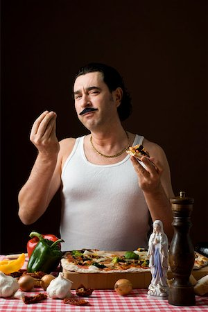

Job Listings
If you are intrested in one of these jobs, Contact us HERE
- Head Chef
- We are looking for a new Head Chef. They will be required to handle the managment of the kitchen and distribute tasks appropriately.
- Web Developers
- We need web developers to maintain our website and be able to add new features to our website. Must be proficient in:
- Social Media Manager
- We need an upbeat individual who knows their way around all the different social media pages we maintain. Must be familiar with:
- Facebook
- Twitter
- MySpace
- SoundCloud
- Instagram
- Waiter
- We are searching for a friendly waiter to serve our customers their food. You will be required to dress adequatly and be comfortable with staying on your feet for long periods of time. Your main duties will include
- Write patrons' food orders on order slips, memorize orders, or enter orders into computers for transmittal to kitchen staff.
- Clean tables or counters after patrons have finished dining.
- Stock service areas with supplies such as coffee, food, tableware, and linens.
- Dish Washer
- We are looking for a motivated person to wash our dishes for us. You will be required to clean dishes, kitchen, food preparation equipment, or utensils. Wash dishes, glassware, flatware, pots, or pans, using dishwashers or by hand. Maintain kitchen work areas, equipment, or utensils in clean and orderly condition.
Pappa Canella hopes that you will join our great crew here at cannellas!
